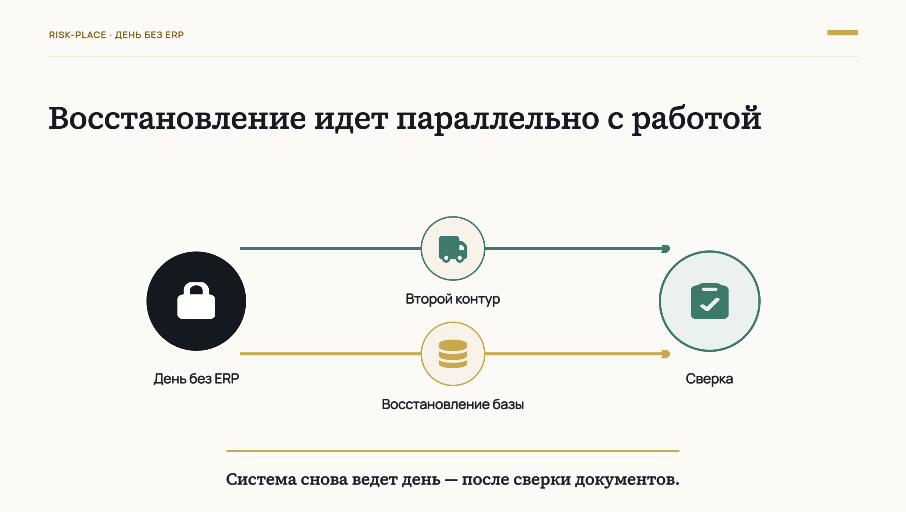

День без ERP распадается на две параллельные работы. Одна команда восстанавливает данные и доступы. Другая поддерживает заранее выбранный поток заказов вручную. Если эти работы не связать общими правилами, после восстановления компания получит второй кризис: разобраться, что фактически уехало и что было обещано.

Утром выберите, какой день вы способны сохранить
Не обещайте обычный выпуск по инерции. Соберите площадку, продажи, склад и ИТ и определите ограниченный список работ: какие позиции известны по свежей выгрузке, какие документы можно оформить, кто вправе назвать срок и где заканчивается ручной контур.
Запишите этот объем и сообщите его тем, кто говорит с заказчиками. Один подтвержденный список полезнее оптимистичного обещания, которое придется менять после каждого звонка.
Каждая ручная операция оставляет след
Используйте пронумерованные бланки или единый журнал. Укажите время, заказ, позицию, количество, ответственного и подтверждение отгрузки. Записи в личных мессенджерах не заменяют общий учет: после смены их придется собирать по памяти.
- Перед отгрузкой проверьте позицию по датированной выгрузке.
- После выезда отметьте фактическое количество и документ.
- Перед новым обещанием обновите доступный остаток ручного контура.
- При передаче смены подпишите, какие операции завершены и какие еще открыты.
Такой порядок кажется медленнее в начале, зато он не позволяет дважды обещать одну партию и облегчает возвращение к обычному учету.
Контрагенты получают один подтвержденный ответ
Поставщика просят удержать или перенести поставку, пока площадка не подтвердила приемку. Заказчику называют срок только по позициям из подтвержденного списка. Публичный ответ строится на тех же фактах: что недоступно, как это влияет на поставки и когда будет следующее сообщение.
Не смешивайте эти сообщения с обсуждением выкупа, страховой выплаты или предполагаемых причин атаки. У каждого вопроса свой ответственный и свой порядок решения. Клиенту прежде всего нужны надежный срок и следующий контакт.
Система возвращается после сверки, а не после включения
Восстановленная база может быть технически доступна, но еще не отражать ручной день. Внесите операции по журналу, сопоставьте документы с фактическими отгрузками, разрешите расхождения и только затем переводите новые заказы обратно в систему.
Подготовить такой день помогает проверка готовности к шифровальщику: она соединяет второй контур, права на решения, сообщения контрагентам и правила возврата к обычному учету.
Частые вопросы
Только по заранее определенным правилам и с учетом всех движений после выгрузки. Ответственный должен понимать ограничения данных и подтверждать каждую операцию.
После того как восстановленная система отражает ручные операции, документы совпадают с фактическими отгрузками, а ответственные подтверждают возврат к обычному процессу.
Нужен короткий текст на основе тех же подтвержденных фактов, которые получили заказчики: что недоступно, каково влияние и когда появится следующее обновление.
Готова ли команда к первому часу кризиса
Планы проверяются не чтением, а сценарием. Диагностика покажет пробелы, корпоративный формат отрабатывает их с вашей командой на ваших процессах.